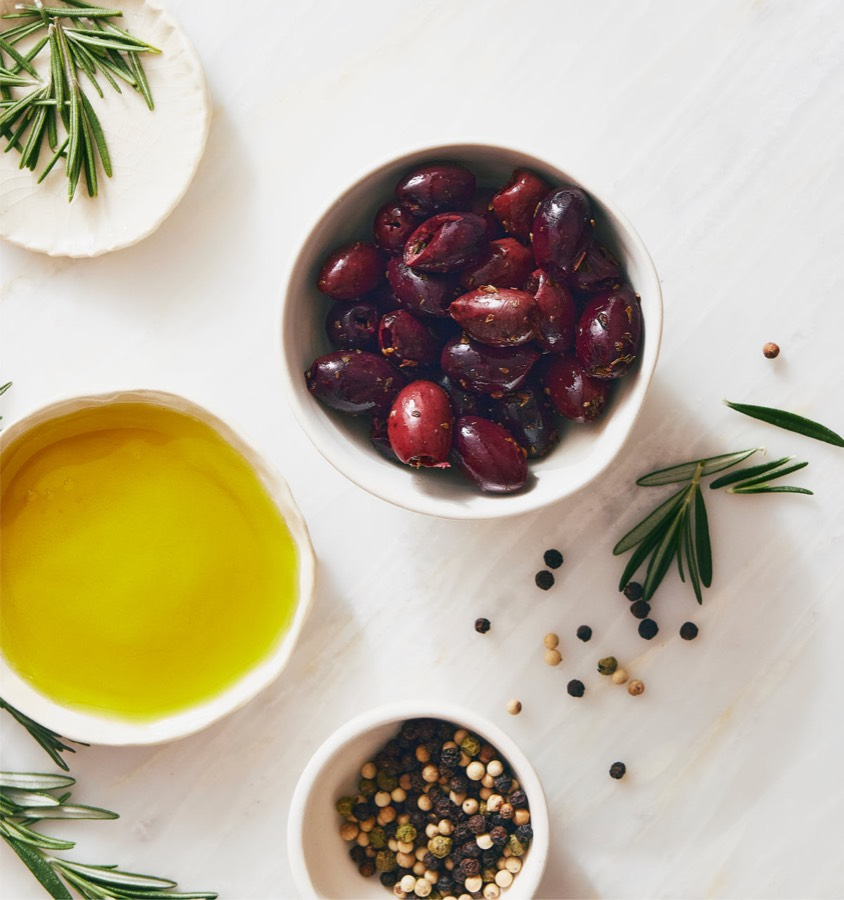

Clean popcorn: which flavors sell, and what they're popped in
- Almost every flavored popcorn on shelf is popped in seed oil, even the clean store brands.
- Nobody clearly sells a flavored popcorn in extra virgin olive oil with no added flavors.
- White cheddar is the biggest flavor with no clean national version, and seed-oil-free snacks are growing (up 9% in natural stores, while snacks with seed oils fell 4%).9
The map
The olive oil column is mostly plain salted popcorn from store brands that say nothing about the oil. The one national brand that pops flavors in olive oil, Khloud, sells protein popcorn, and its retailer listings disagree on whether it adds natural flavors. White cheddar is the flavor to lead with: it's the big mainstream flavor, and no national brand sells it clean.
What sells
Ready-to-eat popcorn and caramel corn sold $2.5 billion in the 52 weeks to May 17, 2026, up 2.9% (Circana), while microwave popcorn shrank.2 SkinnyPop ($657.7M) and Smartfood ($552.8M) are the two biggest brands, and neither sells a clean white cheddar. Flavor-level sales data (Circana, SPINS) is paid, and Kosterina may already have it through its retail business.
Seed oil is the bigger gap
Store brands already skip added flavors, but almost no one skips seed oil in a flavored popcorn. None of the olive oil popcorn pages we read talks about the oil's quality (high-polyphenol, early harvest, single origin), and we found no olive oil white cheddar or truffle we could confirm as clean. We only read product pages, not the bags.
Graza did a limited-edition popcorn popped in its extra virgin olive oil with BjornQorn in September 2025, sold online only.6 It's the closest precedent for an olive oil brand selling popcorn. SkinnyPop has also tested olive oil runs.
How it could be sold
Almost nobody searches Google for "seed oil free popcorn," but seed-oil-free snacks are growing in stores.9 Shoppers find the claim on the bag, so the bag and the shelf do most of the work.
- Put both claims on the front of the bag. For example: "White cheddar popcorn, popped in extra virgin olive oil. No seed oils. No added flavors." The flavor is what people buy, and the two claims are what no national brand has together.
- Start in natural-food stores. That's where SPINS shows seed-oil-free snacks growing and seed-oil snacks shrinking.9
- Sell it to your olive oil customers first. They already pay more for a better oil, so an online launch can show which flavor sells before a store order.
- Send it to creators who already talk about seed oils. On TikTok that conversation is mostly about chips today, and popcorn barely appears in it yet.
- The oil's quality is the part only you can say. None of the olive oil popcorn pages we read mentions polyphenols, harvest or origin.
The details
What counts as clean here
Fails: "natural flavor" or "natural flavors" anywhere in the list, including inside a seasoning's parentheses. Gray, for you to judge: "organic flavor," yeast extract, maltodextrin, undetailed "spices," citric acid, and anything else that does the job of a flavoring. Phosphates, cultures and added sugar are noted but don't change the verdict.
Flavor by flavor, with every ingredient list
White cheddar open for a brand
- Demand
- In 2023, Hershey's salty snacks marketing lead (SkinnyPop is Hershey's) said "The most popular RTE flavors are spicy, cheesy, and simply salted."1 At Walmart, Smartfood White Cheddar carries about 26,000 of Smartfood's roughly 29,700 reviews, and its 10-bag multipack showed "5K+ bought since yesterday."7 On Google, "white cheddar popcorn" got about a third the searches of "kettle corn" over the past year, lifted by a spring 2026 spike, and about 12 times the searches for truffle or dill pickle popcorn.8 The counterpoint is the better-for-you shopper. White cheddar is 2% of SkinnyPop's Walmart reviews, 1% of Angie's and 5% of LesserEvil's.7
- Clean
- Good & Gather Organic White Cheddar (Target)"Organic Popcorn, Organic Expeller Pressed Vegetable Oil (Organic Sunflower Oil, Organic Safflower Oil, Organic Canola Oil), Organic White Cheddar Cheese Powder (Organic Cultured Milk, Salt, Enzymes), Organic Nonfat Milk, Salt." Simple Truth Organic White Cheddar (Kroger)"Organic Popcorn, Organic Coconut and/or Organic Sunflower Oil, Organic White Cheddar Cheese (Pasteurized Milk, Cheese Cultures, Salt, Enzymes), Organic Whey, Sea Salt." 365 Organic White Cheddar (Whole Foods)"Organic Popcorn, Organic Expeller Pressed Sunflower Seed And/Or Organic Expeller Pressed Safflower Seed Oil, Organic Cheese Powder (Organic Cheddar Cheese [Organic Cultured Pasteurized Milk, Salt, Microbial Enzymes], Organic Nonfat Milk, Organic Whey Powder, Salt, Disodium Phosphate)." Kroger White Cheddar"Popcorn, Vegetable Oil (Corn, Soybean, Canola, and/or Sunflower Oil), Cheddar Cheese (Milk, Salt, Cheese Cultures, Enzymes), Whey, Buttermilk, Salt, Disodium Phosphate"
- Gray
- Trader Joe's White Cheddar (citric and lactic acid, no natural flavor). Khloud White Cheddar is popped in olive oil, and Thrive's list has no natural flavor, only citric and lactic acid. But Target's list for Khloud's sea salt flavor includes "Natural Flavors" where Thrive's doesn't, so check the bag.
- Fails
- Smartfood, SkinnyPop and Angie's list Natural Flavor(s). LesserEvil Real Organic Cheddar lists "Organic Flavor" and yeast extract, even though its own site shows only a three-item graphic (popcorn, coconut oil, cheddar).
- How
- Real cheddar powder plus nonfat milk, whey or buttermilk for the tang, and salt. A phosphate keeps the powder smooth. None of the clean ones add a flavoring to push the cheddar taste.
Sea salt crowded
- Demand
- "Simply salted" is one of Hershey's three most popular.1 The trade press credits Khloud's first year to its Olive Oil & Sea Salt, Sweet & Salty Kettle Corn and White Cheddar flavors.2
- Clean
- SkinnyPop Original"Popcorn, Sunflower Oil, Salt" LesserEvil Himalayan Pink Salt"organic popcorn, extra-virgin coconut oil, and Himalayan pink salt" Pip's Sea Salt Mini (formerly Pipcorn)"Popcorn, Avocado Oil, Himalayan Pink Sea Salt, Rosemary Extract (Preservative)." BjornQorn Classic"Non-GMO popcorn, Safflower Or Sunflower Oil, Nutritional Yeast, Salt"
- Olive oil
- At least four clean ones are already on shelf (listed in the olive oil section below), so olive oil alone doesn't make a sea salt popcorn stand out. The oil's quality might.
Sweet & salty kettle crowded
- Demand
- "The combination of sweet and salty flavors is also a home run in the category."1
- Clean
- SkinnyPop Sweet & Salty Kettle"Popcorn, Sugar, Sunflower Oil, Sea Salt" Angie's Sweet & Salty (Whole Foods; Angie's own site hides the list behind a pop-up)"Popcorn, Sunflower Oil, Cane Sugar, Sea Salt" Good & Gather Organic Kettle"Organic Popcorn, Organic Sugar, Organic Expeller Pressed Vegetable Oil (Organic Sunflower Oil, Organic Safflower Oil, Organic Canola Oil), Sea Salt."
- Olive oil
- Khloud Kettle on Thrive: "Popcorn, Milk Protein Isolate, Cane Sugar, Olive Oil, Coconut Oil, Mineral Salt (Pink Himalayan Salt, Potassium Salt)".
Butter a few clean options
- Demand
- Butter leads microwave popcorn. In bagged popcorn, "flavor preferences are more diversified, though butter has shown increased traction."4
- Clean
- LesserEvil Oh My Ghee. Its own site and Thrive agree"Organic Non-GMO Popcorn, Organic Ghee, Himalayan Salt"
- Fails
- SkinnyPop Butter and G.H. Cretors Farmhouse Butter both list Natural Flavor, even with real butter in the bag.
- How
- Ghee or clarified butter carries the taste on its own.
Spicy / jalapeño a few clean options
- Demand
- "Spicy is the fastest-growing better-for-you ready-to-eat flavor subsegment" (Hershey, 2023, ahead of SkinnyPop Cheddar Jalapeño).1
- Clean
- BjornQorn Spicy"Non-GMO popcorn, Safflower or Sunflower Oil, Nutritional Yeast, Salt, Jalapeño Pepper"
- Fails
- Hot honey is the newest launch, though it barely registers on Google, and Trader Joe's Hot Honey lists NATURAL FLAVORS, yeast extract and maltodextrin.
- How
- Dried jalapeño, salt and nutritional yeast. A clean hot honey would need real honey powder and cayenne with nothing added.
Cheddar & caramel a few clean options
- Demand
- G.H. Cretors' top sellers are its cheddar-and-caramel Mix and Cheese and Caramel Corn (reported 2019, the newest figure we found).5
- Clean
- G.H. Cretors Cheddar Cheese Corn"Popcorn, Vegetable Oil (Sunflower, Safflower, Corn, and/or Canola), Cheddar and Granular Cheese (Milk, Cheese Culture, Salt, Enzymes), Nonfat Milk, Salt, Cream, Sodium Phosphate, Lactic Acid, Annatto (Color)" G.H. Cretors Caramel Corn"Brown Sugar, Cane Sugar, Popcorn, Salted Butter (Pasteurized Sweet Cream, Salt), Brown Rice Syrup, Vegetable Oil (Sunflower, Safflower, Corn, and/or Canola), Sea Salt, Soy Lecithin, Baking Soda" The Cheese & Caramel Mix is the two combined.
- Fit
- G.H. Cretors already owns this one cleanly, and a sugar-first recipe is a stretch for a wellness brand.
Dill pickle no clean option, little demand
- Demand
- Launches, not shoppers yet. Conagra launched a Vlasic popcorn3 and Khloud added Dill Pickle in the past year,2 but "dill pickle popcorn" averaged 2 on Google Trends against 78 for "kettle corn" over the past 12 months.8
- Gray
- Little Lad's Spicy Dill Pickle (no natural flavor, but yeast extract and "Spices")"Non-GMO Popcorn, Sunflower Oil, Tapioca Solids, Salt, Apple Cider Vinegar, Citric Acid, Spices, Garlic Powder, Onion Powder, Sugar, Jalapeno Pepper, Lactic Acid, Yeast Extract, Dillweed Oil." Pop Daddy Dill Pickle, popped in olive oil (maltodextrin, dextrose, disodium inosinate and guanylate)"Red Popcorn Kernels, Olive Oil, Dill Seasoning (White Distilled Vinegar [Maltodextrin, White Distilled Vinegar], Salt, Dextrose, Sugar, Dill, Citric Acid, Malic Acid, Garlic, Disodium Inosinate and Guanylate, Natural Color, Silicon Dioxide [Prevents Caking]), Sea Salt."
- How
- Vinegar powder, dill, garlic and salt get most of the way. The gray items are what brands add to make up the rest.
Truffle no clean option, little demand
- Demand
- Launch signal only. Khloud's newest flavors include Truffle White Cheddar,2 but "truffle popcorn" averaged 2 on Google Trends against 78 for "kettle corn."8 As a second flavor on top of white cheddar it could work, but not as a lead.
- Fails
- Pip's Truffle hides it inside the salt: "Black Truffle Salt (Sea Salt, Dried Truffle, Natural Truffle Flavor)".
- Gray
- BjornQorn Earth lists "Black Truffle Salt" with no breakdown, so it can't be confirmed either way.
- Why it fits
- Truffle and olive oil are a natural Mediterranean pair, and truffle white cheddar puts the flavor on top of the biggest flavor. Most truffle salts carry an added flavor, so the salt supplier is the thing to check.
Cinnamon and everything bagel were on the list to check. Cinnamon showed only new launches, and we couldn't read an ingredient list for any of them. Everything bagel had no demand signal in any source we read, so both are left off.
Every olive oil popcorn we found
- 365 Organic Extra Virgin Olive Oil & Sea Salt (Whole Foods): "Organic Popcorn, Organic Extra Virgin Olive Oil, Sea Salt"
- Central Market Olive Oil Popcorn (H-E-B): "ORGANIC POPCORN, ORGANIC EXTRA VIRGIN OLIVE OIL, SEA SALT."
- Good & Gather Organic Olive Oil & Himalayan Salt (Target): "Popcorn†, Olive Oil†, Himalayan Pink Salt. [†Organic]"
- Little Lad's Sea Salt & Olive Oil (Vermont): "Non-GMO Popcorn, Olive Oil, Sea Salt." The pages we read say "No 'Natural Flavors.' No maltodextrin. Ever."
- Khloud (Khloé Kardashian's protein popcorn) uses olive oil across its line, but its listings disagree. Thrive shows Olive Oil & Sea Salt with no natural flavor, while Target shows "Popcorn, Milk Protein Concentrate, Olive Oil, Sea Salt, Natural Flavors, Cultures." Its selling point is protein, not the oil.
- Pop Daddy pops in olive oil (gray, see dill pickle).
- SkinnyPop (Hershey) has tested olive oil popcorn. Hershey's shop lists SkinnyPop Olive Oil Salted Caramel as "currently not available," and a third-party Walmart seller lists a SkinnyPop Truffle "Made with Olive Oil, Gluten and Seed Oil Free" with 44 reviews. Neither is on SkinnyPop's main site, and neither page shows ingredients, so these look like limited runs. Either way, the biggest popcorn brand has already tested olive oil.
- Graza, the squeeze-bottle olive oil brand, did a limited-edition popcorn popped in its extra virgin olive oil with BjornQorn in September 2025, sold online only.6 It's the closest precedent for an olive oil brand selling popcorn.
Worth knowing before a spec
- "Organic flavor" is still an added flavor. It's the same kind of flavoring as "natural flavor," made from organic ingredients. LesserEvil's cheddar lists "Organic Flavor" and no "natural flavor." If your rule covers organic flavor too, put "no added flavors" in the co-packer spec, or a supplier can swap one for the other.
- The store brands are already free of added flavors, so the edge over them is the oil and the brand. Good & Gather, 365, Simple Truth and Kroger add no flavor of any kind, but their flavored popcorn is popped in sunflower, safflower, canola, coconut, or (Kroger) soybean and corn oil, and they sell on price. Against Smartfood, SkinnyPop, Angie's and LesserEvil, "no added flavors" is itself a difference.
- Flavor hides in sub-ingredients. Some brands, like Pip's truffle and LesserEvil's cheddar, carry the flavoring inside a seasoning's parentheses, so ask every seasoning supplier for the full breakdown.
- Retailer lists can disagree with each other. Khloud is the example. Read the bag before naming a competitor.
- Not covered here: how extra virgin olive oil holds up in popping at scale (smoke point, shelf life), which co-manufacturers pop in it, and shelf prices.
Sources
- Snack Food & Wholesale Bakery, "State of the Industry 2023," July 26, 2023, quoting Mark Chu, senior director of marketing, Hershey Salty Snacks: snackandbakery.com
- Snack Food & Wholesale Bakery, "State of the Industry 2026," July 27, 2026 (Circana, 52 weeks ending May 17, 2026; Khloud flavor launches): snackandbakery.com
- Food Dive, November 16, 2026: fooddive.com
- Snack Food & Wholesale Bakery, May 20, 2026: snackandbakery.com
- Snack Food & Wholesale Bakery, April 4, 2019, on G.H. Cretors' top sellers (old): snackandbakery.com
- Snack Food & Wholesale Bakery, "Graza, BjornQorn collab on EVOO popcorn," September 12, 2025: snackandbakery.com
- Walmart search results, read November 23, 2026. Review counts summed across each flavor's bagged listings on page 1, within each brand. Reviews pile up over years and include every size, so this is a share-of-buyers proxy, not current sales. Full counts: research file popcorn-demand-reviews-raw.md.
- Google Trends, US, past 12 months, read November 23, 2026. Averages: kettle corn 78, white cheddar popcorn 24, sea salt popcorn 9, truffle popcorn 2, dill pickle popcorn 2. White cheddar peaked at 53 in the week of April 12, 2026: trends.google.com
- FoodNavigator, "Why better-for-you snacks are winning with consumers," July 29, 2026, citing SPINS: "Seed-oil-free snacks grew 2% in dollar sales and 9% in natural channels, compared with declines of 2% and 4%, respectively, for seed-oil-containing snacks." The article doesn't state the time period: foodnavigator.com
Product pages are linked in place. Each was read on November 23, 2026. Where the brand's own site doesn't show the list (Angie's, Khloud), a retailer page is used and named.